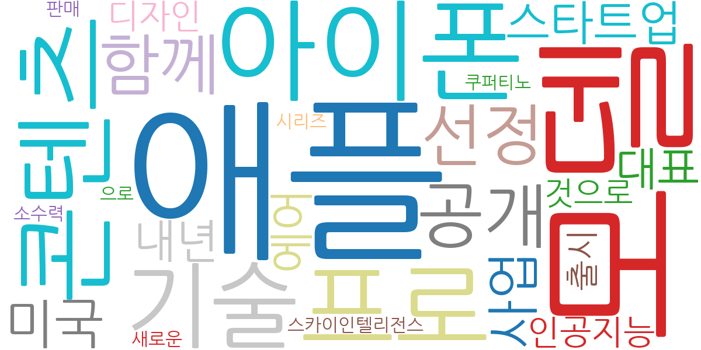
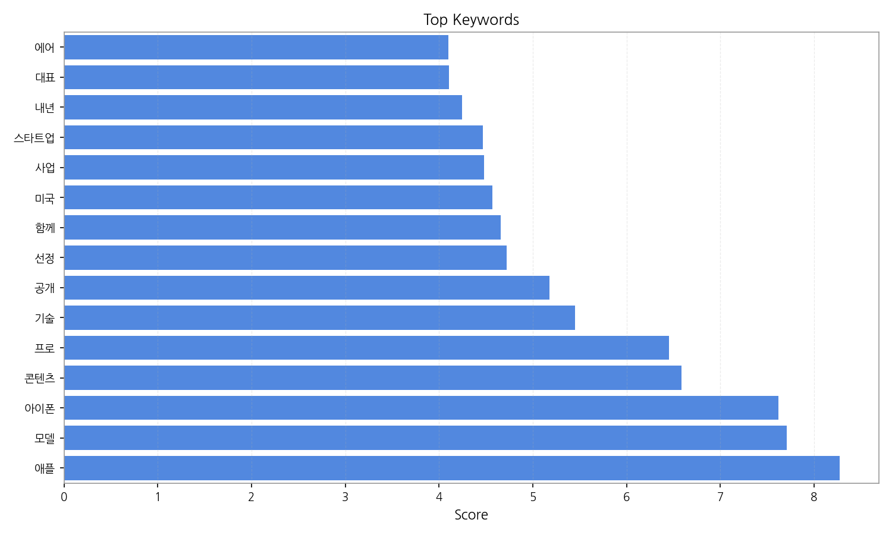
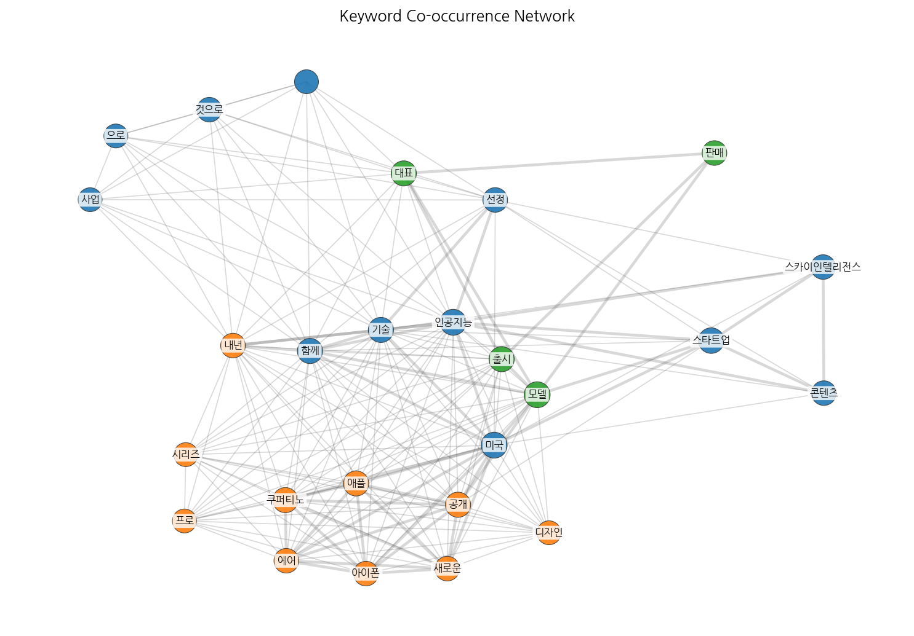
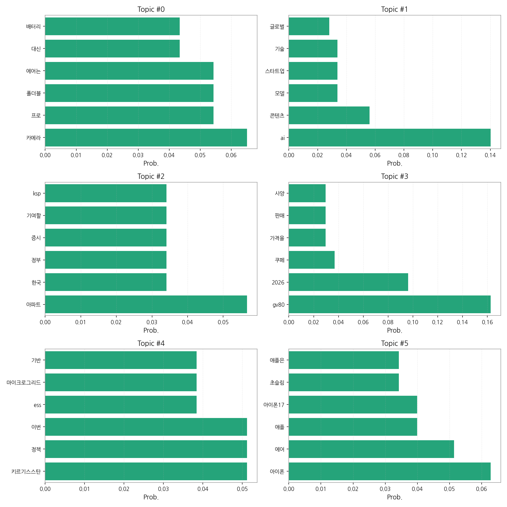
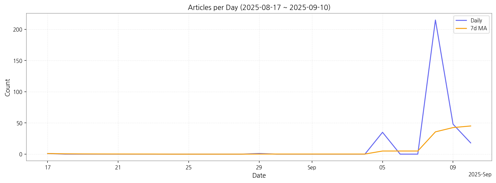

주어진 데이터를 분석하여 핵심 맥락을 설명하고, 최근 변화와 실무 인사이트를 제시합니다.
핵심 맥락: 데이터는 크게 세 가지 주제로 묶을 수 있습니다. 첫째, IT 기기 출시 및 기술 동향은 삼성의 폴더블폰, 애플의 아이폰 신제품 출시와 관련된 기사가 주를 이룹니다. 둘째, AI 기술 및 산업 발전은 AI 모델, 스타트업, 인공지능 기술 관련 뉴스가 다수를 차지합니다. 셋째, 경제 및 부동산 시장은 아파트 시장, 증시 동향, 정부 정책 등의 뉴스가 포함됩니다. 자동차(제네시스 GV80) 관련 뉴스와 키르기스스탄의 에너지 정책 관련 뉴스는 상대적으로 비중이 작습니다.
최근 변화/스파이크: 9월 5일부터 9월 8일 사이에 기사 수가 급증하는 현상이 나타났습니다. 이는 9월 초에 삼성 갤럭시 S25와 애플 아이폰 신제품 발표 및 관련 기사가 대량으로 생성된 것으로 추정됩니다.
실무 인사이트:
실시간 트렌드 모니터링 강화: 뉴스 기사 수의 급증 현상을 감안하여, 주요 IT 기기 출시 및 기술 동향에 대한 실시간 모니터링 시스템을 구축하고, 소셜 미디어 및 온라인 커뮤니티의 반응을 분석하여 신속하게 대응 전략을 수립해야 합니다.

| Rank | Keyword | Score |
|---|---|---|
| 1 | 애플 | 8.274 |
| 2 | 모델 | 7.706 |
| 3 | 아이폰 | 7.618 |
| 4 | 콘텐츠 | 6.584 |
| 5 | 프로 | 6.453 |
| 6 | 기술 | 5.448 |
| 7 | 공개 | 5.177 |
| 8 | 선정 | 4.724 |
| 9 | 함께 | 4.660 |
| 10 | 미국 | 4.569 |
| 11 | 사업 | 4.482 |
| 12 | 스타트업 | 4.468 |
| 13 | 내년 | 4.245 |
| 14 | 대표 | 4.107 |
| 15 | 에어 | 4.100 |




주어진 데이터를 분석하여 핵심 맥락을 설명하고, 최근 변화와 실무 인사이트를 제시합니다.
핵심 맥락: 데이터는 크게 세 가지 주제로 묶을 수 있습니다. 첫째, IT 기기 출시 및 기술 동향은 삼성의 폴더블폰, 애플의 아이폰 신제품 출시와 관련된 기사가 주를 이룹니다. 둘째, AI 기술 및 산업 발전은 AI 모델, 스타트업, 인공지능 기술 관련 뉴스가 다수를 차지합니다. 셋째, 경제 및 부동산 시장은 아파트 시장, 증시 동향, 정부 정책 등의 뉴스가 포함됩니다. 자동차(제네시스 GV80) 관련 뉴스와 키르기스스탄의 에너지 정책 관련 뉴스는 상대적으로 비중이 작습니다.
최근 변화/스파이크: 9월 5일부터 9월 8일 사이에 기사 수가 급증하는 현상이 나타났습니다. 이는 9월 초에 삼성 갤럭시 S25와 애플 아이폰 신제품 발표 및 관련 기사가 대량으로 생성된 것으로 추정됩니다.
실무 인사이트:
실시간 트렌드 모니터링 강화: 뉴스 기사 수의 급증 현상을 감안하여, 주요 IT 기기 출시 및 기술 동향에 대한 실시간 모니터링 시스템을 구축하고, 소셜 미디어 및 온라인 커뮤니티의 반응을 분석하여 신속하게 대응 전략을 수립해야 합니다.
| Idea | Target | Value Prop | Score |
|---|---|---|---|
| AI 기반 실시간 트렌드 분석 플랫폼 | IT 기업, 투자사, 시장조사 기관, 경제 전문가 (직원 수 100명 이상의 중대형 기업) | AI 기반 실시간 뉴스 분석 및 트렌드 예측 기능을 제공하여, 시장 변화에 대한 빠른 대응과 전략 수립을 지원합니다. 다양한 데이터 소스를 통합 분석하여 핵심 정보를 신속하게 제공하며, 경쟁사 분석 및 시장 예측 기능을 통해 차별화된 가치를 제공합니다. | 4.50 |
| AI 스타트업 발굴 및 투자 플랫폼 | VC, 엔젤 투자자, 대기업 투자 부서 (중소형 및 대형 기업) | AI 스타트업 데이터베이스 구축 및 분석을 통해 유망한 스타트업을 발굴하고, 투자 포트폴리오 관리 및 투자 결정 지원 기능을 제공합니다. 스타트업과의 네트워킹 기회를 제공하고, 투자 후 관리 및 성과 측정 기능을 통해 투자 효율성을 높입니다. | 4.20 |
| 부동산 시장 예측 및 리스크 관리 시스템 | 부동산 개발업체, 투자회사, 금융기관 (중대형 기업) | 빅데이터 분석 및 AI 기술을 활용하여 부동산 시장을 예측하고, 리스크 관리 전략을 수립하는 데 도움을 줍니다. 정부 정책 변화 및 시장 트렌드를 실시간으로 모니터링하고, 맞춤형 리스크 관리 솔루션을 제공합니다. | 3.80 |
| IT 기기 출시 정보 통합 플랫폼 | IT 기기 소비자, IT 전문가, IT 리뷰어 (개인 및 중소형 기업) | 다양한 출처의 IT 기기 출시 정보를 한 곳에서 통합 제공하여, 소비자의 제품 선택을 지원합니다. 제품 사양 비교, 전문가 리뷰, 소비자 의견 등을 종합적으로 제공하여 정보의 신뢰성을 높이고, 개인 맞춤형 제품 추천 기능을 제공합니다. | 3.50 |
| AI 기반 개인 맞춤형 뉴스 추천 서비스 | 일반 소비자, 전문직 종사자 (개인) | AI 기반 개인 맞춤형 뉴스 추천 서비스를 제공하여, 개인의 관심사에 맞는 뉴스만을 선별적으로 제공합니다. 뉴스 소비 시간을 단축하고, 중요한 정보를 효율적으로 얻을 수 있도록 지원합니다. 사용자의 피드백을 통해 추천 정확도를 지속적으로 향상시킵니다. | 3.00 |